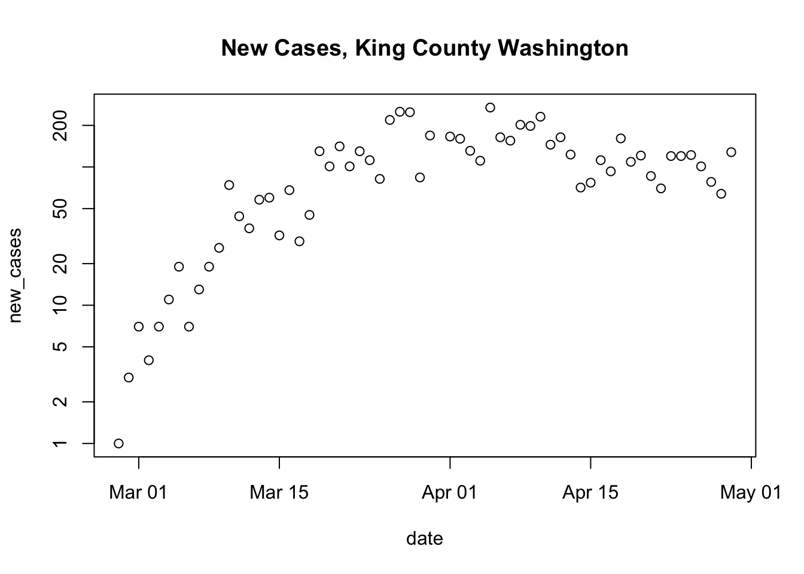
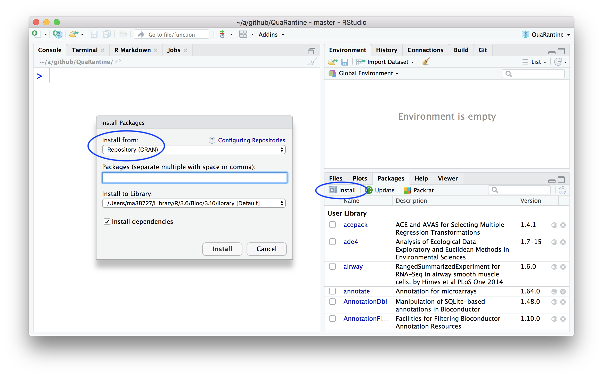
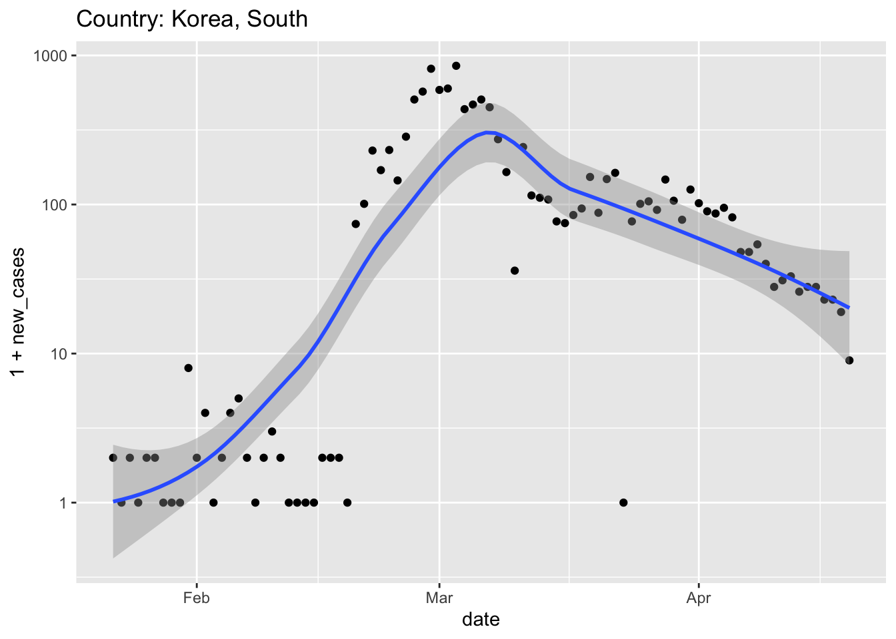
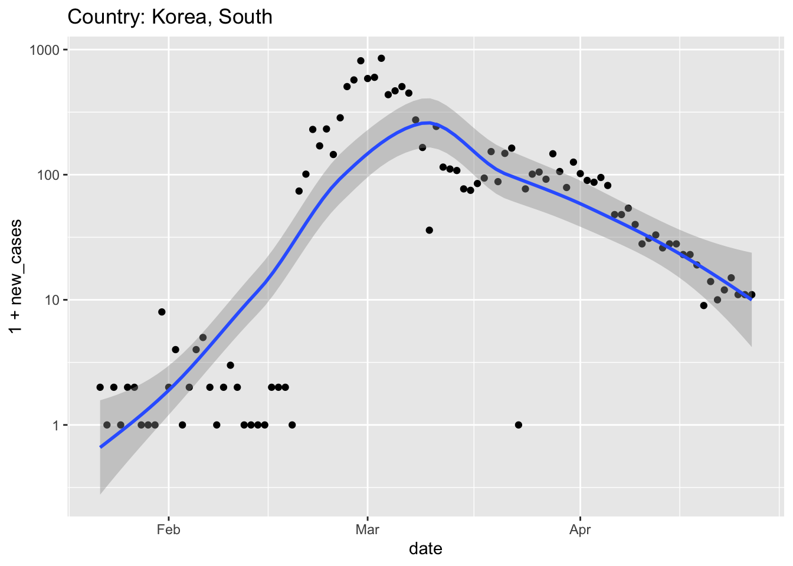
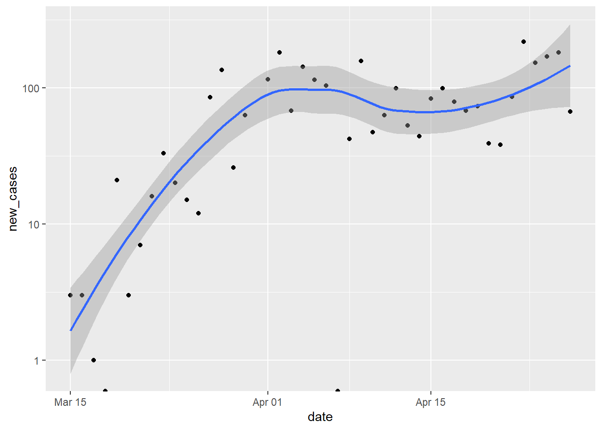
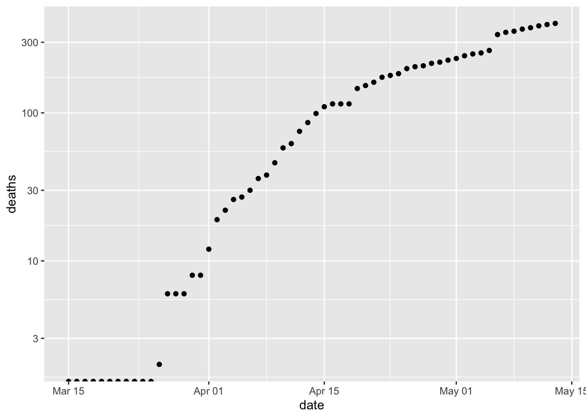
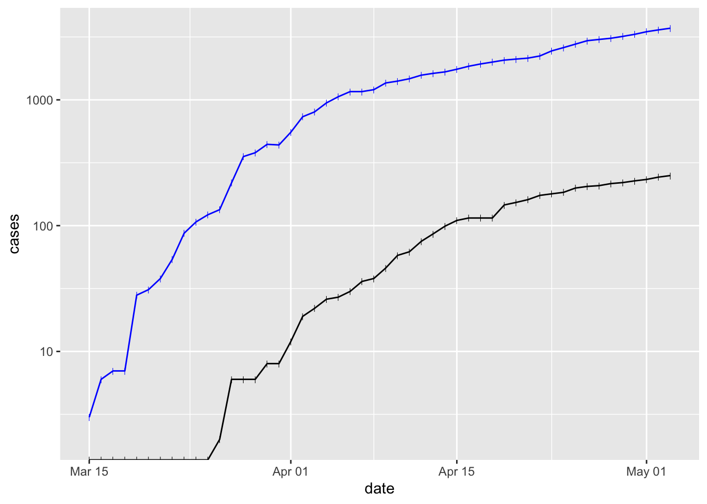
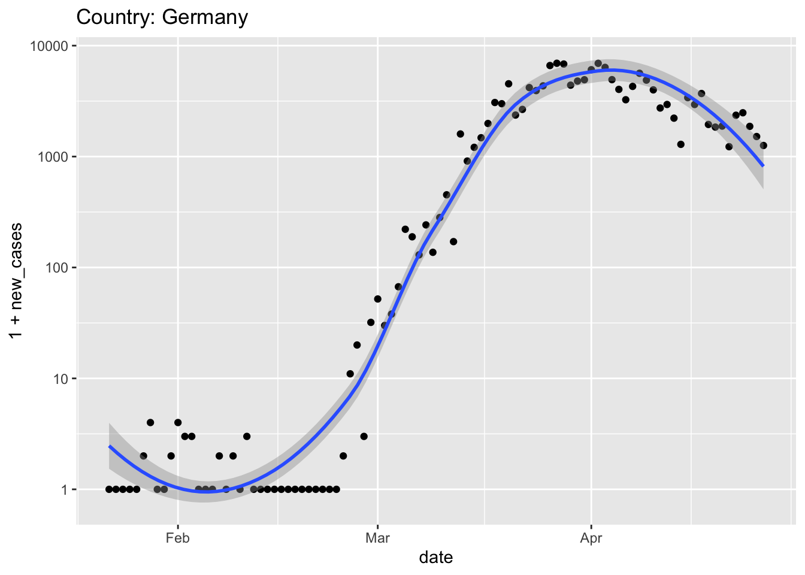
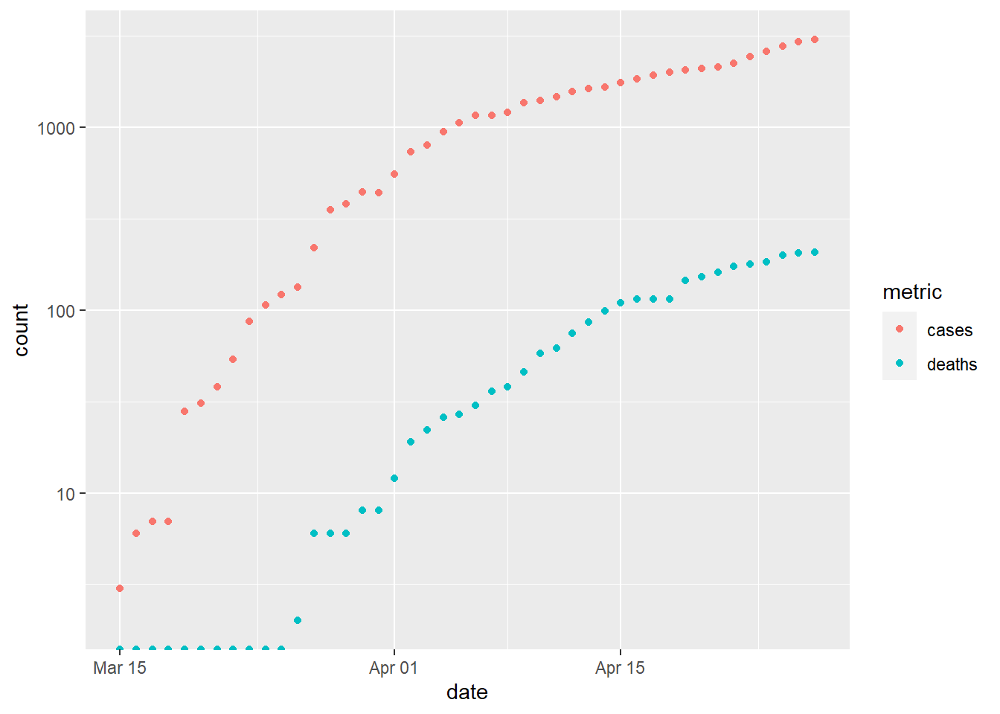

Week 3 Packages and the ‘tidyverse’
3.1 Day 15 (Monday) Zoom check-in
Review and troubleshoot (15 minutes)
Over the weekend, I wrote two functions. The first retrieves and ‘cleans’ the US data set.
get_US_data <-
function()
{
## retrieve data from the internet
url <- "https://raw.githubusercontent.com/nytimes/covid-19-data/master/us-counties.csv"
us <- read.csv(url, stringsAsFactors = FALSE)
## update 'date' from character vector to 'Date'. this is the
## last line of executed code in the function, so the return
## value (the updated 'us' object) is returned by the functino
within(us, {
date = as.Date(date, format = "%Y-%m-%d")
})
}The second plots data for a particular county and state
plot_county <-
function(us_data, county_of_interest = "Erie", state_of_interest = "New York")
{
## create the title for the plot
main_title <- paste(
"New Cases,", county_of_interest, "County", state_of_interest
)
## subset the us data to just the county and state of interest
county_data <- subset(
us_data,
(county == county_of_interest) & (state == state_of_interest)
)
## calculate new cases for particular county and state
county_data <- within(county_data, {
new_cases <- diff( c(0, cases) )
})
## plot
plot( new_cases ~ date, county_data, log = "y", main = main_title)
}I lived in Seattle (King County, Washington), for a while, and this is where the first serious outbreak occurred. Here’s the relevant data:
us <- get_US_data()
plot_county(us, "King", "Washington")
## Warning in xy.coords(x, y, xlabel, ylabel, log): 1 y value <= 0 omitted from
## logarithmic plot
Packages (20 minutes)
Base R
R consists of ‘packages’ that implement different functionality. Each package contains functions that we can use, and perhaps data sets (like the
mtcars) data set from Friday’s presentation) and other resources.R comes with several ‘base’ packages installed, and these are available in a new R session.
Discover packages that are currently available using the
search()function. This shows that the ‘stats’, ‘graphics’, ‘grDevices’, ‘utils’, ‘datasets’, ‘methods’, and ‘base’ packages, among others, are available in our current R session.When we create a variable like
R creates a new symbol in the
.GlobalEnvlocation on the search path.When we evaluate a function like
length(x)…R searches for the function
length()along thesearch()path. It doesn’t findlength()in the.GlobalEnv(because we didn’t define it there), or in the ‘stats’, ‘graphics’, … packages. Eventually, R finds the definition oflengthin the ‘base’ package.R then looks for the definition of
x, finds it in the.GlobalEnv.Finally, R applies the definition of
lengthfound in the base package to the value ofxfound in the.GlobalEnv.
Contributed packages
R would be pretty limited if it could only do things that are defined in the base packages.
It is ‘easy’ to write a package, and to make the package available for others to use.
A major repository of contributed packages is CRAN – the Comprehensive R Archive Network. There are more than 15,000 packages in CRAN.
Many CRAN packages are arranged in task views that highlight the most useful packages.
Installing and attaching packages
There are too many packages for all to be distributed with R, so it is necessary to install contributed packages that you might find interesting.
once a package is installed (you only need to install a package once), it can be ‘loaded’ and ‘attached’ to the search path using
library().As an exercise, try to attach the ‘readr’, ‘dplyr’, and ‘ggplot2’ packages
If any of these fails with a message like
it means that the package has not been installed (or that you have a typo in the name of the library!)
Install any package that failed when
library()was called withAlternatively, use the RStudio interface to select (in the lower right panel, by default) the ‘Packages’ tab, ‘Install’ button.

One package may use functions from one or more other packages, so when you install, for instance ‘dplyr’, you may actually install several packages.
The ‘tidyverse’ of packages (20 minutes)
The ‘tidyverse’ of packages provides a very powerful paradigm for working with data.
Based on the idea that a first step in data analysis is to transform the data into a standard format. Subsequent steps can then be accomplished in a much more straight-forward way, using a small set of functions.
Hadley Wickham’s ‘Tidy Data’ paper provides a kind of manifesto for what constitutes tidy data:
- Each variable forms a column.
- Each observation forms a row.
- Each type of observational unit forms a table
We’ll look at the readr package for data input, and the dplyr package for essential data manipulation.
readr for fast data input
Load (install if necessary!) and attach the readr package
Example: US COVID data. N.B.,
readr::read_csv()rather thanread.csv()url <- "https://raw.githubusercontent.com/nytimes/covid-19-data/master/us-counties.csv" us <- read_csv(url) ## Parsed with column specification: ## cols( ## date = col_date(format = ""), ## county = col_character(), ## state = col_character(), ## fips = col_character(), ## cases = col_double(), ## deaths = col_double() ## ) us ## # A tibble: 92,592 x 6 ## date county state fips cases deaths ## <date> <chr> <chr> <chr> <dbl> <dbl> ## 1 2020-01-21 Snohomish Washington 53061 1 0 ## 2 2020-01-22 Snohomish Washington 53061 1 0 ## 3 2020-01-23 Snohomish Washington 53061 1 0 ## 4 2020-01-24 Cook Illinois 17031 1 0 ## 5 2020-01-24 Snohomish Washington 53061 1 0 ## 6 2020-01-25 Orange California 06059 1 0 ## 7 2020-01-25 Cook Illinois 17031 1 0 ## 8 2020-01-25 Snohomish Washington 53061 1 0 ## 9 2020-01-26 Maricopa Arizona 04013 1 0 ## 10 2020-01-26 Los Angeles California 06037 1 0 ## # … with 92,582 more rowsThe
usdata is now represented as atibble: a nicerdata.frameNote that
datehas been deduced correctlyread_csv()does not coerce inputs tofactor(no need to usestringsAsFactors = FALSE)- The tibble displays nicely (first ten lines, with an indication of total lines)
dplyr for data manipulation
Load and attach the dplyr package.
dplyr implements a small number of verbs for data transformation
- A small set of functions that allow very rich data transformation
- All have the same first argument – the
tibbleto be transformed - All allow ‘non-standard’ evaluation – use the variable name without quotes
".
filter()rows that meet specific criteriafilter(us, state == "New York", county == "Erie") ## # A tibble: 43 x 6 ## date county state fips cases deaths ## <date> <chr> <chr> <chr> <dbl> <dbl> ## 1 2020-03-15 Erie New York 36029 3 0 ## 2 2020-03-16 Erie New York 36029 6 0 ## 3 2020-03-17 Erie New York 36029 7 0 ## 4 2020-03-18 Erie New York 36029 7 0 ## 5 2020-03-19 Erie New York 36029 28 0 ## 6 2020-03-20 Erie New York 36029 31 0 ## 7 2020-03-21 Erie New York 36029 38 0 ## 8 2020-03-22 Erie New York 36029 54 0 ## 9 2020-03-23 Erie New York 36029 87 0 ## 10 2020-03-24 Erie New York 36029 107 0 ## # … with 33 more rowsdplyr uses the ‘pipe’
%>%as a way to chain data and functions togetherus %>% filter(state == "New York", county == "Erie") ## # A tibble: 43 x 6 ## date county state fips cases deaths ## <date> <chr> <chr> <chr> <dbl> <dbl> ## 1 2020-03-15 Erie New York 36029 3 0 ## 2 2020-03-16 Erie New York 36029 6 0 ## 3 2020-03-17 Erie New York 36029 7 0 ## 4 2020-03-18 Erie New York 36029 7 0 ## 5 2020-03-19 Erie New York 36029 28 0 ## 6 2020-03-20 Erie New York 36029 31 0 ## 7 2020-03-21 Erie New York 36029 38 0 ## 8 2020-03-22 Erie New York 36029 54 0 ## 9 2020-03-23 Erie New York 36029 87 0 ## 10 2020-03-24 Erie New York 36029 107 0 ## # … with 33 more rowsThe pipe works by transforming whatever is on the left-hand side of the
%>%to the first argument of the function on the right-hand side.Like
filter(), most dplyr functions take as their first argument a tibble, and return a tibble. So the functions can be chained together, as in the following example.
select()specific columnsus %>% filter(state == "New York", county == "Erie") %>% select(state, county, date, cases) ## # A tibble: 43 x 4 ## state county date cases ## <chr> <chr> <date> <dbl> ## 1 New York Erie 2020-03-15 3 ## 2 New York Erie 2020-03-16 6 ## 3 New York Erie 2020-03-17 7 ## 4 New York Erie 2020-03-18 7 ## 5 New York Erie 2020-03-19 28 ## 6 New York Erie 2020-03-20 31 ## 7 New York Erie 2020-03-21 38 ## 8 New York Erie 2020-03-22 54 ## 9 New York Erie 2020-03-23 87 ## 10 New York Erie 2020-03-24 107 ## # … with 33 more rows
Other common verbs (see tomorrow’s quarantine)
mutate()(add or update) columnssummarize()one or more columnsgroup_by()one or more variables when performing computations.ungroup()removes the grouping.arrange()rows based on values in particular column(s);desc()in descending order.count()the number of times values occur
Other ‘tidyverse’ packages
Packages adopting the ‘tidy’ approach to data representation and management are sometimes referred to as the tidyverse.
ggplot2 implements high-quality data visualization in a way consistent with tidy data representations.
The tidyr package implements functions that help to transform data to ‘tidy’ format; we’ll use
pivot_longer()later in the week.
3.2 Day 16 Key tidyverse packages: readr and dplyr
Start a script for today. In the script
Load the libraries that we will use
If R responds with (similarly for dplyr)
Error in library(readr) : there is no package called 'readr'then you’ll need to install (just once per R installation) the readr pacakge
Work through the following commands, adding appropriate lines to your script
Read US COVID data. N.B.,
readr::read_csv()rather thanread.csv()url <- "https://raw.githubusercontent.com/nytimes/covid-19-data/master/us-counties.csv" us <- read_csv(url) ## Parsed with column specification: ## cols( ## date = col_date(format = ""), ## county = col_character(), ## state = col_character(), ## fips = col_character(), ## cases = col_double(), ## deaths = col_double() ## ) us ## # A tibble: 92,592 x 6 ## date county state fips cases deaths ## <date> <chr> <chr> <chr> <dbl> <dbl> ## 1 2020-01-21 Snohomish Washington 53061 1 0 ## 2 2020-01-22 Snohomish Washington 53061 1 0 ## 3 2020-01-23 Snohomish Washington 53061 1 0 ## 4 2020-01-24 Cook Illinois 17031 1 0 ## 5 2020-01-24 Snohomish Washington 53061 1 0 ## 6 2020-01-25 Orange California 06059 1 0 ## 7 2020-01-25 Cook Illinois 17031 1 0 ## 8 2020-01-25 Snohomish Washington 53061 1 0 ## 9 2020-01-26 Maricopa Arizona 04013 1 0 ## 10 2020-01-26 Los Angeles California 06037 1 0 ## # … with 92,582 more rowsfilter()rows that meet specific criteriaus %>% filter(state == "New York", county == "Erie") ## # A tibble: 43 x 6 ## date county state fips cases deaths ## <date> <chr> <chr> <chr> <dbl> <dbl> ## 1 2020-03-15 Erie New York 36029 3 0 ## 2 2020-03-16 Erie New York 36029 6 0 ## 3 2020-03-17 Erie New York 36029 7 0 ## 4 2020-03-18 Erie New York 36029 7 0 ## 5 2020-03-19 Erie New York 36029 28 0 ## 6 2020-03-20 Erie New York 36029 31 0 ## 7 2020-03-21 Erie New York 36029 38 0 ## 8 2020-03-22 Erie New York 36029 54 0 ## 9 2020-03-23 Erie New York 36029 87 0 ## 10 2020-03-24 Erie New York 36029 107 0 ## # … with 33 more rowsselect()specific columnsus %>% filter(state == "New York", county == "Erie") %>% select(state, county, date, cases) ## # A tibble: 43 x 4 ## state county date cases ## <chr> <chr> <date> <dbl> ## 1 New York Erie 2020-03-15 3 ## 2 New York Erie 2020-03-16 6 ## 3 New York Erie 2020-03-17 7 ## 4 New York Erie 2020-03-18 7 ## 5 New York Erie 2020-03-19 28 ## 6 New York Erie 2020-03-20 31 ## 7 New York Erie 2020-03-21 38 ## 8 New York Erie 2020-03-22 54 ## 9 New York Erie 2020-03-23 87 ## 10 New York Erie 2020-03-24 107 ## # … with 33 more rowsmutate()(add or update) columnserie <- us %>% filter(state == "New York", county == "Erie") erie %>% mutate(new_cases = diff(c(0, cases))) ## # A tibble: 43 x 7 ## date county state fips cases deaths new_cases ## <date> <chr> <chr> <chr> <dbl> <dbl> <dbl> ## 1 2020-03-15 Erie New York 36029 3 0 3 ## 2 2020-03-16 Erie New York 36029 6 0 3 ## 3 2020-03-17 Erie New York 36029 7 0 1 ## 4 2020-03-18 Erie New York 36029 7 0 0 ## 5 2020-03-19 Erie New York 36029 28 0 21 ## 6 2020-03-20 Erie New York 36029 31 0 3 ## 7 2020-03-21 Erie New York 36029 38 0 7 ## 8 2020-03-22 Erie New York 36029 54 0 16 ## 9 2020-03-23 Erie New York 36029 87 0 33 ## 10 2020-03-24 Erie New York 36029 107 0 20 ## # … with 33 more rowssummarize()one or more columnserie %>% mutate(new_cases = diff(c(0, cases))) %>% summarize( duration = n(), total_cases = max(cases), max_new_cases_per_day = max(new_cases), mean_new_cases_per_day = mean(new_cases), median_new_cases_per_day = median(new_cases) ) ## # A tibble: 1 x 5 ## duration total_cases max_new_cases_per… mean_new_cases_per… median_new_cases_… ## <int> <dbl> <dbl> <dbl> <dbl> ## 1 43 2954 217 68.7 63group_by()one or more variables when performing computationsarrange()based on a particular column;desc()in descending order.us_county_cases %>% arrange(desc(total_cases)) ## # A tibble: 2,859 x 3 ## # Groups: county [1,676] ## county state total_cases ## <chr> <chr> <dbl> ## 1 New York City New York 158268 ## 2 Nassau New York 34522 ## 3 Suffolk New York 32059 ## 4 Cook Illinois 30574 ## 5 Westchester New York 27664 ## 6 Los Angeles California 19528 ## 7 Wayne Michigan 15748 ## 8 Bergen New Jersey 14965 ## 9 Hudson New Jersey 13708 ## 10 Essex New Jersey 12863 ## # … with 2,849 more rows us_state_cases %>% arrange(desc(total_cases)) ## # A tibble: 55 x 2 ## state total_cases ## <chr> <dbl> ## 1 New York 290167 ## 2 New Jersey 113223 ## 3 Massachusetts 55060 ## 4 Illinois 43916 ## 5 California 43696 ## 6 Pennsylvania 42717 ## 7 Michigan 37761 ## 8 Florida 31535 ## 9 Louisiana 26782 ## 10 Connecticut 25284 ## # … with 45 more rowscount()the number of times values occur (duration of the pandemic?)us %>% count(county, state) %>% arrange(desc(n)) ## # A tibble: 2,859 x 3 ## county state n ## <chr> <chr> <int> ## 1 Snohomish Washington 97 ## 2 Cook Illinois 94 ## 3 Orange California 93 ## 4 Los Angeles California 92 ## 5 Maricopa Arizona 92 ## 6 Santa Clara California 87 ## 7 Suffolk Massachusetts 86 ## 8 San Francisco California 85 ## 9 Dane Wisconsin 82 ## 10 San Diego California 77 ## # … with 2,849 more rows
3.3 Day 17 Visualization with ggplot2
3.4 Day 18 Worldwide COVID data
Setup
Start a new script and load the packages we’ll use
library(readr) library(dplyr) library(ggplot2) library(tidyr) # specialized functions for transforming tibblesThese packages should have been installed during previous quarantines.
Source
CSSE at Johns Hopkins University, available on github
hopkins = "https://raw.githubusercontent.com/CSSEGISandData/COVID-19/master/csse_covid_19_data/csse_covid_19_time_series/time_series_covid19_confirmed_global.csv" csv <- read_csv(hopkins) ## Parsed with column specification: ## cols( ## .default = col_double(), ## `Province/State` = col_character(), ## `Country/Region` = col_character() ## ) ## See spec(...) for full column specifications.
‘Tidy’ data
The data has initial columns describing region, and then a column for each date of the pandemic. There are 264 rows, corresponding to the different regions covered by the database.
We want instead to ‘pivot’ the data, so that each row represents cases in a particular region on a particular date, analogous to the way the US data we have been investigating earlier has been arranged.
tidyr provides functions for manipulating a
tibbleinto ‘tidy’ format.tidyr::pivot_longer()takes a ‘wide’ data frame likecsv, and allows us to transform it to the ‘long’ format we are interested in.I discovered how to work with
pivot_longer()using its help page?tidyr::pivot_longerThe first argument represents columns to pivot or, as a convenience when these are negative values, columns we do not want to pivot. We do not want to pivot columns 1 through 4, so this argument will be
-(1:4).The
names_toargument is the column name we want to use to refer to the names of the columns that we do pivot. We’ll pivot the columns that have a date in them, so it makes sense to usenames_to = "date".The
values_toargument is the column name we want to use for the pivoted values. Since the values in the main part ofcsvare the number of cases observed, we’ll usevalues_to = "cases"
Here’s what we have after pivoting
csv %>% pivot_longer(-(1:4), names_to = "date", values_to = "cases") ## # A tibble: 25,344 x 6 ## `Province/State` `Country/Region` Lat Long date cases ## <chr> <chr> <dbl> <dbl> <chr> <dbl> ## 1 <NA> Afghanistan 33 65 1/22/20 0 ## 2 <NA> Afghanistan 33 65 1/23/20 0 ## 3 <NA> Afghanistan 33 65 1/24/20 0 ## 4 <NA> Afghanistan 33 65 1/25/20 0 ## 5 <NA> Afghanistan 33 65 1/26/20 0 ## 6 <NA> Afghanistan 33 65 1/27/20 0 ## 7 <NA> Afghanistan 33 65 1/28/20 0 ## 8 <NA> Afghanistan 33 65 1/29/20 0 ## 9 <NA> Afghanistan 33 65 1/30/20 0 ## 10 <NA> Afghanistan 33 65 1/31/20 0 ## # … with 25,334 more rowsWe’d like to further clean this up data
Format our newly created ‘date’ column (using
as.Date(), but with aformat=argument appropriate for the format of the dates in this data set)Re-name, for convenience, the
County/Regioncolumn as justcountry.Select only columns of interest –
country,date,casesSome countries have multiple rows, because the data is a provincial or state levels, so we would like to sum all cases, grouped by
countryanddate
world <- csv %>% pivot_longer(-(1:4), names_to = "date", values_to = "cases") %>% mutate( country = `Country/Region`, date = as.Date(date, format = "%m/%d/%y") ) %>% group_by(country, date) %>% summarize(cases = sum(cases)) world ## # A tibble: 17,760 x 3 ## # Groups: country [185] ## country date cases ## <chr> <date> <dbl> ## 1 Afghanistan 2020-01-22 0 ## 2 Afghanistan 2020-01-23 0 ## 3 Afghanistan 2020-01-24 0 ## 4 Afghanistan 2020-01-25 0 ## 5 Afghanistan 2020-01-26 0 ## 6 Afghanistan 2020-01-27 0 ## 7 Afghanistan 2020-01-28 0 ## 8 Afghanistan 2020-01-29 0 ## 9 Afghanistan 2020-01-30 0 ## 10 Afghanistan 2020-01-31 0 ## # … with 17,750 more rowsLet’s also calculate
new_casesby country- Use
group_by()to perform thenew_casescomputation for each country - Use
mutate()to calculate the new variable - Use
ungroup()to remove the grouping variable, so it doesn’t unexpectedly influence other calculations - re-assign the updated
tibbleto the variableworld
- Use
Exploration
Use
group_by()andsummarize()to find the maximum (total) number of cases, andarrange() these indesc()`ending orderworld %>% group_by(country) %>% summarize(n = max(cases)) %>% arrange(desc(n)) ## # A tibble: 185 x 2 ## country n ## <chr> <dbl> ## 1 US 965785 ## 2 Spain 226629 ## 3 Italy 197675 ## 4 France 162220 ## 5 Germany 157770 ## 6 United Kingdom 154037 ## 7 Turkey 110130 ## 8 Iran 90481 ## 9 China 83912 ## 10 Russia 80949 ## # … with 175 more rows
Visualization
Start by creating a subset, e.g., the US
Use ggplot2 to visualize the progression of the pandemic
ggplot(us, aes(date, new_cases)) + scale_y_log10() + geom_point() + geom_smooth() + ggtitle(paste("Country:", country)) ## Warning: Transformation introduced infinite values in continuous y-axis ## Warning: Transformation introduced infinite values in continuous y-axis ## `geom_smooth()` using method = 'loess' and formula 'y ~ x' ## Warning: Removed 25 rows containing non-finite values (stat_smooth).
It seems like it would be convenient to capture our data cleaning and visualization steps into separate functions that can be re-used, e.g., on different days or for different visualizations.
write a function for data retrieval and cleaning
get_world_data <- function() { ## read data from Hopkins' github repository hopkins = "https://raw.githubusercontent.com/CSSEGISandData/COVID-19/master/csse_covid_19_data/csse_covid_19_time_series/time_series_covid19_confirmed_global.csv" csv <- read_csv(hopkins) ## 'tidy' the data world <- csv %>% pivot_longer(-(1:4), names_to = "date", values_to = "cases") %>% mutate( country = `Country/Region`, date = as.Date(date, format = "%m/%d/%y") ) ## sum cases across regions within aa country world <- world %>% group_by(country, date) %>% summarize(cases = sum(cases)) ## add `new_cases`, and return the result world %>% group_by(country) %>% mutate(new_cases = diff(c(0, cases))) %>% ungroup() }…and for plotting by country
plot_country <- function(tbl, view_country = "US") { country_title <- paste("Country:", view_country) ## subset to just this country country_data <- tbl %>% filter(country == view_country) ## plot country_data %>% ggplot(aes(date, 1 + new_cases)) + scale_y_log10() + geom_point() + ## add method and formula to quieten message geom_smooth(method = "loess", formula = y ~ x) + ggtitle(country_title) }Note that, because the first argument of
plot_country()is a tibble, the output ofget_world_data()can be used as the input ofplot_country(), and can be piped together, e.g.,world <- get_world_data() ## Parsed with column specification: ## cols( ## .default = col_double(), ## `Province/State` = col_character(), ## `Country/Region` = col_character() ## ) ## See spec(...) for full column specifications. world %>% plot_country("Korea, South")
3.5 Day 19 (Friday) Zoom check-in
3.5.1 Review and trouble shoot (25 minutes)
3.5.2 Next week (25 minutes)
3.6 Day 20 Exploring the course of pandemic in different regions
Use the data and functions from quarantine day 18 to place the pandemic into quantitative perspective. Start by retrieving the current data
Start with the United States

When did ‘stay at home’ orders come into effect? Did they appear to be effective?
When would the data suggest that the pandemic might be considered ‘under control’, and country-wide stay-at-home orders might be relaxed?
Explore other countries.
The longest trajectory is probably displayed by China

Italy and Spain were hit very hard, and relatively early, by the pandemic


Austria relaxed quarantine very early, in the middle of April; does that seem like a good idea?
Germany also had strong leadership (e.g., chancellor Angela Merkel provided clear and unambiguous rules for Germans to follow, and then self-isolated when her doctor, whom she had recently visited, tested positive) and an effective screening campaign (e.g., to make effective use of limited testing resources, in some instances pools of samples were screened, and only if the pool indicated infection were the individuals in the pool screened.

At the start of the pandemic, Singapore had excellent surveillance (detecting individuals with symptoms) and contact tracing (identifying and placing in quarantine those individuals coming in contact with the infected individuals). New cases were initially very low, despite proximity to China, and Singapore managed the pandemic through only moderate social distancing (e.g., workers were encouraged to operate in shifts; stores and restaurants remained open). Unfortunately, Singaporeans returning from Europe (after travel restrictions were in place there) introduced new cases that appear to have overwhelmed the surveillance network. Later, the virus spread to large, densely populated migrant work housing. Singapore’s initial success at containing the virus seems to have fallen apart in the face of this wider spread, and more severe restrictions on economic and social life were imposed.

South Korea had a very ‘acute’ spike in cases associated with a large church. The response was to deploy very extensive testing and use modern approaches to tracking (e.g., cell phone apps) coupled with transparent accounting. South Korea imposed relatively modest social and economic restrictions. It seems like this has effectively ‘flattened the curve’ without pausing the economy.

Where does your own exploration of the data take you?
3.7 Day 21
Self-directed activities.